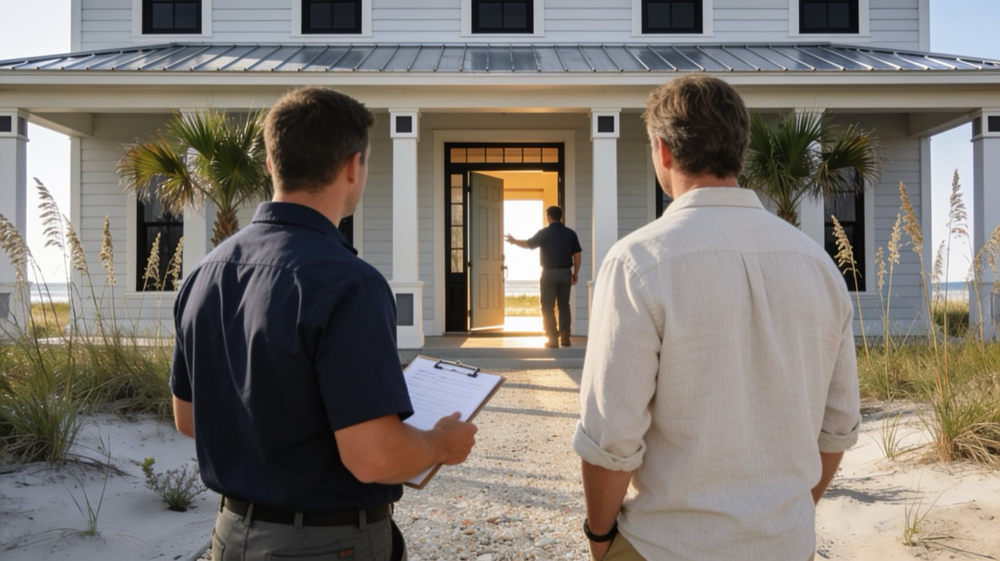
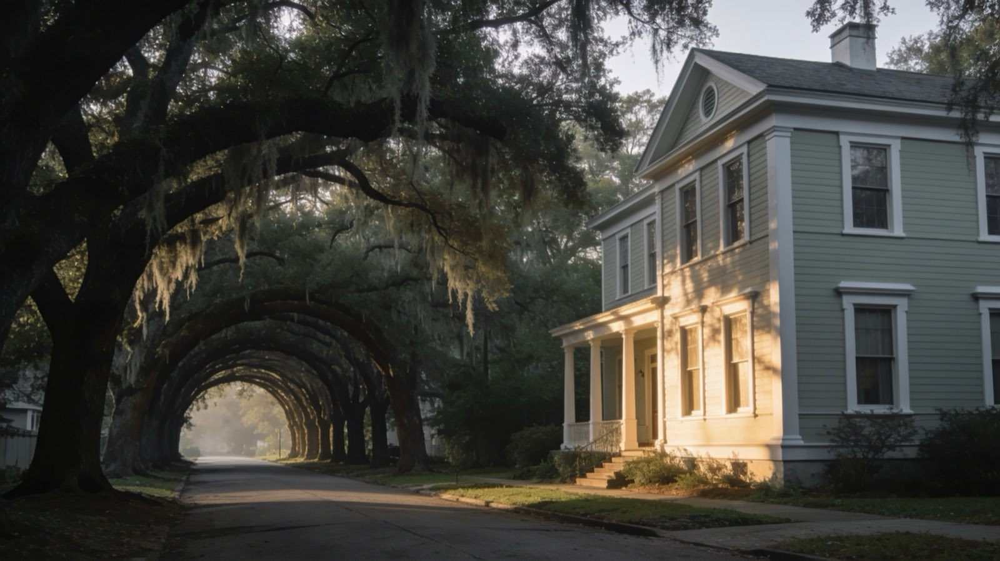

The walkthrough
We walk the job with you, on camera, and you keep the video. This is where the scope gets honest: what gets painted, what gets repaired first, and what can wait a year without costing you anything.
- Free, and usually under an hour
- Recorded, so nothing said here can drift later
- Problems flagged before they are painted over

The price, in writing
A written estimate with the prep listed line by line: wash, repairs, sanding, primer, coats, cleanup. The price is the price. It moves only if the scope moves, and you approve that in writing too.
- Ranges already published on the pricing page
- Assumptions and exclusions spelled out, not discovered
- No deposit to get a number

Prep like it matters
Most of the job happens before the color. Wash, scrape, repair, sand, prime — on the coast, this is the whole difference between a four-year paint job and a ten-year one.
- Soft wood and moisture fixed, never painted over
- Marine-grade primers where the salt reaches
- Prep is in the estimate, so you can see you paid for it

Paint, contained
Rooms contained, floors covered, landscaping protected. Every evening the site is cleaned and reset, so you keep living your life — or running your business — while the work happens around it.
- Daily cleanup, not end-of-job cleanup
- The same crew start to finish
- Walkways and doorways stay usable

The recorded walkthrough
The job ends the way it started: every painted surface walked on camera, with you holding the video. If something is not right, it gets fixed before we call it done — because done means documented.
- Every surface, on camera, kept by you
- Punch-list items fixed before sign-off
- It is why our reviews read the way they do